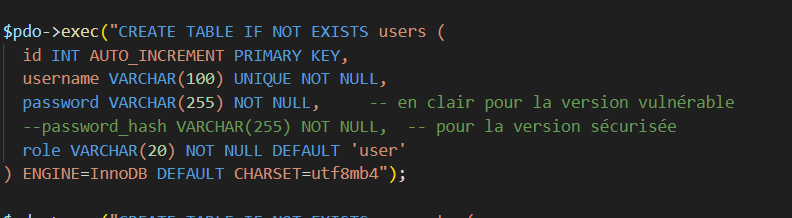

Ce TP a pour objectif d’identifier et corriger des vulnérabilités courantes dans une application web utilisant PHP et MySQL.
Connexion test avec : alice / alice123
' OR '1'='1 --
La requête SQL est construite par concaténation de chaînes, ce qui permet
à un attaquant d’injecter du code SQL. La condition '1'='1' est toujours vraie,
ce qui permet de contourner l’authentification.
Utilisation de requêtes préparées avec PDO pour éviter toute injection SQL.
$stmt = $pdo->prepare("SELECT * FROM users WHERE username = ? AND password = ?");
$stmt->execute([$username, $password]);
<script>alert('XSS');</script>Le script est exécuté au rechargement de la page, ce qui montre une faille XSS stockée.
htmlspecialchars()echo htmlspecialchars($comment, ENT_QUOTES, 'UTF-8');
password_hash()password_verify()
if (password_verify($password, $hash)) {
echo "Connexion réussie";
}
L’injection SQL ne fonctionne plus car les entrées utilisateur ne sont plus interprétées comme du code SQL.
